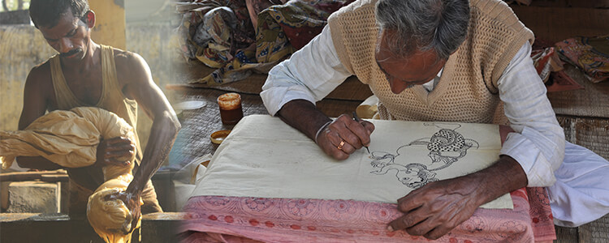
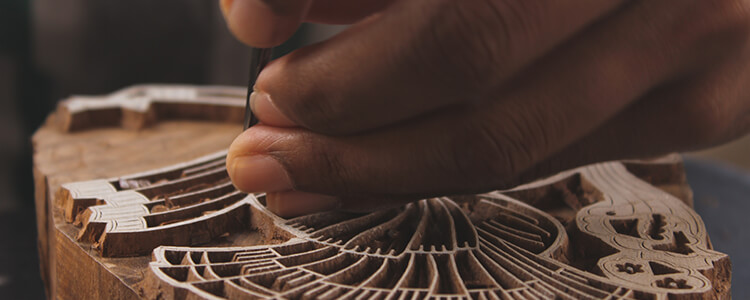
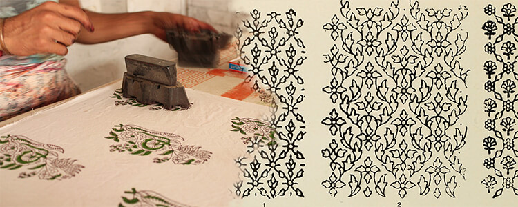

Srikalahasthi Style
Machilipatnam Style
Kalamkari Art Designs – The Evolution
Kalamkari art form traces its origins way back 2500 years to Iran (Persia then). The name depicts Kari (craftwork) using kalam (pen). It can be hand-painted or block-printed on cotton fabric.
Over time, trade became the most important factor in creation of demand for exotic art forms. Traders brought their cultural influence to the designs in order to satisfy global market needs and in turn helped in the spread and the development of the artform.
Kalamkari art designs gained prominence in ancient India as a storytelling medium. Hindu Mythology is full of interesting stories of gods and their miracles or kings and their iconic wars or heroic tales of a common man. Storytellers back then used to draw characters and scenes on a
piece of cloth using vegetable dyes and display them while singing out the narrative, describing the epics o
f Ramayana, Mahabharata, Hindu deities and so on. Now you know how these tales spread across miles without any technology in play.
We humans are instinctively communicative and creative beings. Not only have we adapted to conditions on earth but also have tried to beautify our lives in whatever ways we can. As a result, so many art forms have taken birth out of our creative minds like Kalamkari.
Though the style of Kalamkari art designs and handicrafts came about as a storytelling medium, it took its own shape in different regions according to the demand and the cultural influence via trade and commerce in the Medieval Period.
Some of the major styles of Kalamkari Art that developed and became popular were:
1) Srikalahasti Style
Srikalahasti Temple in Andhra Pradesh is a popular pilgrimage site fo r Hindus dedicated to Lord Shiva. The temple gained importance under Pallava rulers (6th -9th century AD). It was fu rther e xpanded during Cholas (9th -13th Century AD) and Vijayanagara Empire (14th – 17th century AD). During those days, the paintings do ne on cloth were used as background or canopies to the God’s statues. Paintings usually were related to Hindu religion or nature. T his style was done purely by free hand drawing using a bamboo stick with a hair-thin tip dipped in vegetable dyes.
2) Machlipatnam Style
Machlipatnam was a port city during the medieval period of 15th -17th century AD. Machlipatnam style was an amalgamation of local motifs and cultural influence from Persia and Europe from where a lot of trade use to happen. So, the style was more global and w asn’t constrained by religion or mythology. They were more inclined towards patterns and shapes with respect to depicting flora and fauna including human figures. This technique included printing of bigger motifs on cloth with hand-carved traditional blocks and then painting the intricate details by hands.
Technique behind the art
The basic process flow of making Kalamkari Textiles involves the following steps:
Kalamkari in today's world
Today we come across Kalamkari in its pure form as bedsheets, curtains, bags, sarees, dress materials. An art which adorned the temples in olden times has come to our own homes in different forms and shapes. Artforms like Kalamkari have started gaining more and more popularity in recent times because of their no-chemical process of creating printed textiles. The start to finish process of this art involves use of vegetable dyes, fruit powder and minerals like iron to produce colors and paint, on an organic cotton cloth. Increasingly, people in the world are moving towards lesser use of chemicals in their lives and thus, anything organic and vegan is a preferred commodity for consumption in today’s world.
Most popular of Kalamkari’s use today is in making sarees. Saree is the most beloved attire for an Indian woman. Despite many
of us adopting western ways of dressing nowa
days, a handcrafted saree is still a treasured and cherished outfit for most Indian women.
Home Décor has been another major user of this artform. Imagine a minimalistic living room, a white couch with a Kalamkari cushion to add color and ethnic highlight to it!
